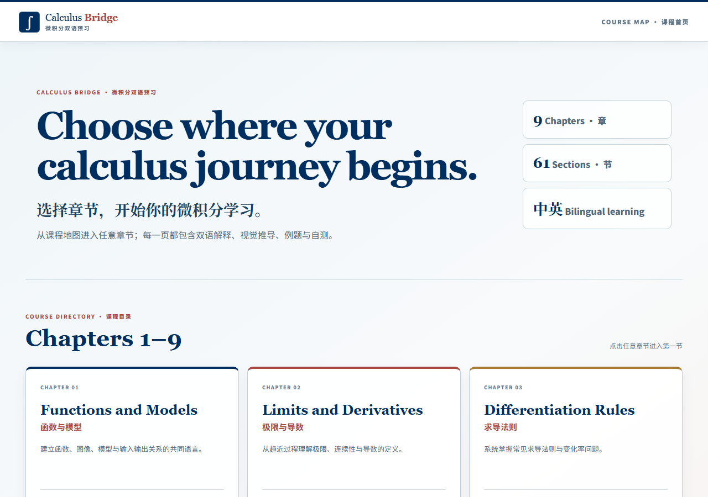
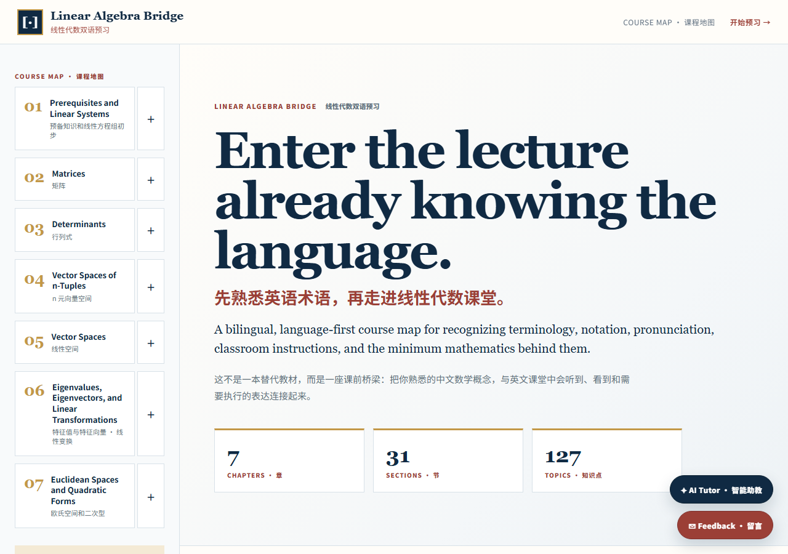

Calculus Bridge
为全英文学习微积分的新生而建，跨越语言与知识的门槛，边学数学边熟悉英语表达。
- 服务对象 大一新生 / 全英文数学学习者
- 用途 章节课程图 · 双语解释 · 例题与自测
给大一新生的全英文数学学习桥梁，让人人都能跨过语言与知识门槛。

为全英文学习微积分的新生而建，跨越语言与知识的门槛，边学数学边熟悉英语表达。

先熟悉英语术语，再走进线性代数课堂。把中文概念与英文课堂里的表达连接起来。
我如何教学，以及我到底在研究什么。
主要专研 Vibe Coding，和同学们一起学习 AI，把编程做成一件人人能上手、能出作品的事，让基础与创造感同时发生。
利用 AI 实现都市农业水培与污水资源回收，探索人工智能在可持续农业与环境工程中的真实应用。
一个正在生长中的 AI 分身原型。先用几段预置对话展示它"如何介绍我"，后续课程再接入真正的对话能力。
说明：这是静态聊天原型，仅含预置内容，不会上传你的任何输入。真正的 AI 对话将在后续课程中实现。
除了研究，生活里也有很多热爱。悬停某个兴趣，看看它背后的故事；想交流或合作，欢迎联系。
我很想知道你的真实想法。留个言，帮我把它做得更好。